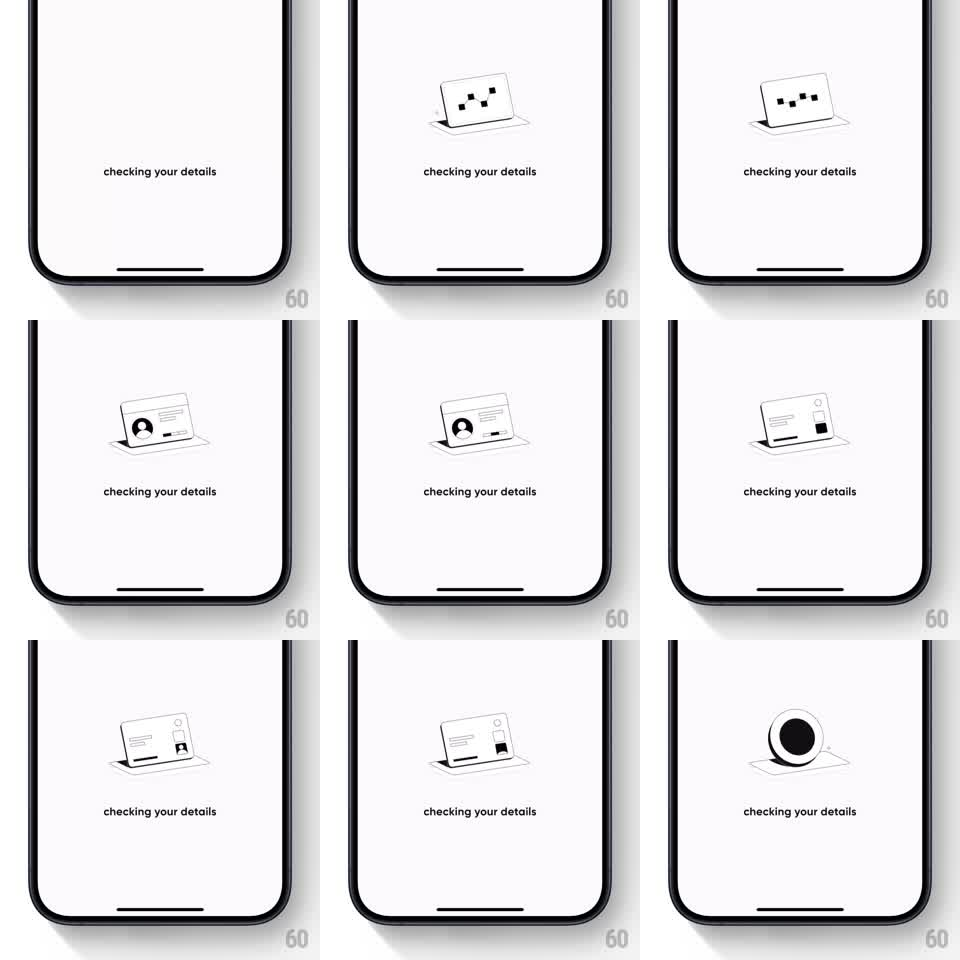

Media
Frame-by-frame

Rebuild this animation 1:1: CRED's detail-verification loader - a slot-machine of ID cards cycles upward through a framed viewport, then a checkmark stamps in with a bounce.

Rebuild this animation 1:1: CRED's detail-verification loader - a slot-machine of ID cards cycles upward through a framed viewport, then a checkmark stamps in with a bounce. ## Integration Integration: stack-agnostic spec - springs given as stiffness/damping, timed motions as duration + curve; map every value to your framework and animation library of choice. ## Scene Light full-screen loader: a rounded card frame at center, "checking your details" caption below it. Cards (pan card, ID card, document cards) pass vertically through the frame like a film reel. ## Motion spec Pattern: reel-cycle loading into success stamp, ~4s. - Cards slide up through the frame continuously (~500ms per card, linear, one card visible at a time, slight tilt per card). - Each card differs (photo ID, document, cheque) and passes in a fixed rotation, masking at the frame edges. - After ~6 cards, the last card exits and a checkmark disc springs in: scale 0.6 to 1.15 to 1 (spring stiffness 300 damping 12), ring drawing on with it (250ms stroke). - Caption text holds steady the whole time. ## Calibration - Mask the reel hard at the frame's top and bottom edges - a card bleeding outside the frame kills the slot illusion. - The check must visibly overshoot; an eased fade-in reads as generic. ## Reduced motion Single card crossfades into the checkmark over 300ms. ## Don't miss - Card tilt alternates slightly so the reel reads as physical cards, not scrolling screenshots. - The check lands exactly at the frame's center - the reel hands off its spot to it.